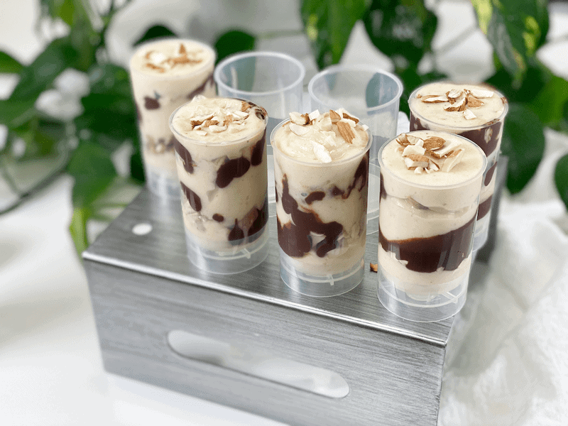
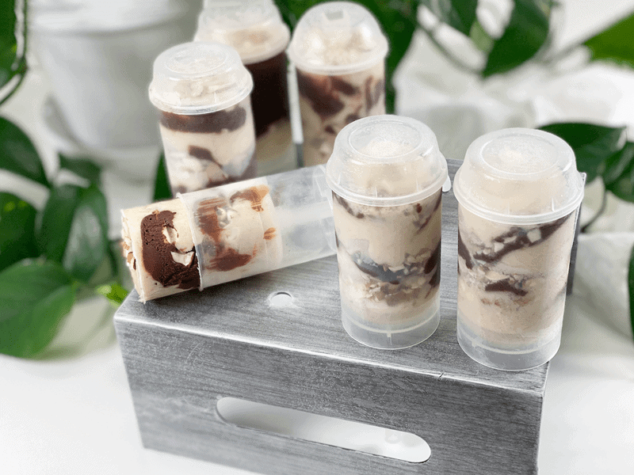

Chocolate Ganache Banana Ice Cream Push Pops | Raw Vegan
Simplicity at its best (deep sigh of contentment). The key here is never to underestimate the potential of “simple” when it comes to foods that are delicious and nutritious. Recipes don’t have to be complex to stop you in your tracks. A few days back, Bob asked me to create a frozen treat for him that involved banana ice cream, chocolate, and almonds. I nailed it and came out looking like the Queen of the Kitchen. Ready to adorn your crown too?

There are several ways to enjoy this recipe. You can make it exactly as instructed or you can skip the freezing process and serve it up as a warm fudge sundae. When putting these push pops together, I made a mental note to save a little behind so I could present a quick afternoon treat for Bob. I placed some ice cream in a bowl, drizzled ganache over it, and sprinkled some chopped almonds on top. He was like a little kid in a candy shop.
Ingredient Measurements and Recipe Yields
The recipe below can be used more as a format. You can’t mess it up, so don’t get locked into using set measurements. If you only have 3 bananas or if you have 10…use them. You can adjust how many almonds you chop, and the ganache recipe will make 10+ ice cream treats (depending on how much or little you add). So as you can see, it’s very forgiving. The most important part of the whole process is that you have fun with it!
The amount this recipe will yield will depend on the size of the molds you have on hand. You can use any popsicle mold, 3 oz. Dixie cups (poking in a popsicle stick or even a spoon), or you can freeze the layers in half-pint freezer-safe jars and eat with a spoon. Options, options, options!

Make Every Bite Count
Prepare food with love in your heart. Never serve yourself or your family without it. It will make all the difference in how your body absorbs the nutrients and how your digestion responds. If making food from scratch seems like a dreaded chore for you, find a way to reframe it. While preparing the food, say to yourself (or even out loud):
- I am so blessed to make food for my loved ones (or self).
- I am honored to serve my family with love.
- I am thankful that I can take the time to make delicious and nutritious foods.
- I am thankful that I don’t have to eat heavily processed foods.
- I am setting a positive example for those who witness my actions.
- Add your own…
Ingredients
Preparation
- Freeze 5 large bananas. Start with RIPE bananas so they will be western. Peel and lay them in a single layer on a baking sheet. Pop in the freezer until frozen.
- While the bananas are freezing make the raw chocolate ganache as instructed in the link above. Place in a squeeze bottle. Store in the fridge until ready to use.
- Remove the frozen bananas and rough chop them, placing them in the food processor with “S” blades. Blend until creamy.
- Optional: Place the banana ice cream in a piping bag. I found this made it much cleaner and easier to deal with.
- Pipe the banana ice cream into the mold, alternating with chopped almonds and ganache until you reach the top.
- Place in the freezer and enjoy once frozen.
© AmieSue.com